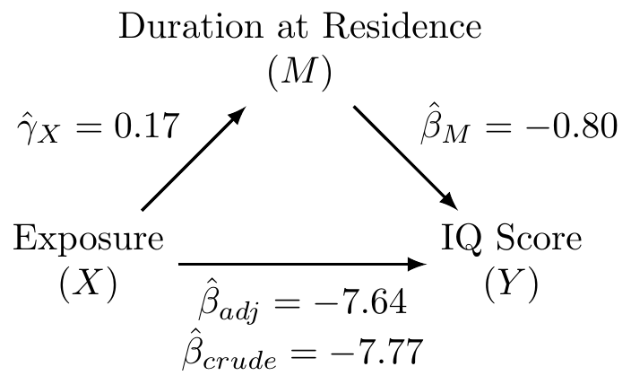

Mediation Modeling Example with Bootstrap CI Estimate
This page is part of the University of Colorado-Anschutz Medical Campus’ BIOS 6618 Recitation collection. To view other questions, you can view the BIOS 6618 Recitation collection page or use the search bar to look for keywords.
Mediation Example Problem
We will use linear regression to examine the relationship between the outcome of IQ test score (iq) with lead exposure (expose) and years lived at the current residence (resdur) as a potential mediator to answer the following exercises:
Three Fundamental Models of Mediation
Fit the three fundamental models of mediation analysis and fill in the following DAG:
Solution:
Code
lead <- read.csv('../../.data/lead2.csv') # read in data
ex2_crude <- lm(iq ~ expose, data=lead) # fit crude model
ex2_adjusted <- lm(iq ~ expose + resdur, data=lead) # fit adjusted model
ex2_covariate <- lm(resdur ~ expose, data=lead) # fit covariate model
coef(ex2_crude)(Intercept) expose
102.705128 -7.770346 Code
coef(ex2_adjusted)(Intercept) expose resdur
108.0445890 -7.6357785 -0.7993818 Code
coef(ex2_covariate)(Intercept) expose
6.6794872 0.1683389 Proportion Mediated by Duration at Residence
What is the proportion/percent mediated by duration at residence?
Solution:
The proportion mediated is \(\frac{\text{indirect effect}}{\text{total effect}} = \frac{\hat{\beta}_{crude} - \hat{\beta}_{adj}}{\hat{\beta}_{crude}} = \frac{-7.77 - (-7.64)}{-7.77} = 0.0167\). This corresponds to the percent mediated of \(0.0167 \times 100 = 1.67\%\).
Confidence Interval Around Proportion Mediated and p-Value
What is the 95% CI and corresponding p-value for the proportion/percent mediated by duration at residence using the normal approximation to estimate the standard error (i.e., Sobel’s test)?
Solution:
We first need to calculate the standard error for our indirect effect: \[ SE(\hat{\beta}_{crude} - \hat{\beta}_{adj}) = \sqrt{{\hat{\gamma}}_X^2\left(SE\left({\hat{\beta}}_M\right)\right)^2+{\hat{\beta}}_M^2\left(SE\left({\hat{\gamma}}_X\right)\right)^2} \]
We can find this information in our coefficient tables:
Code
summary(ex2_adjusted)$coefficient Estimate Std. Error t value Pr(>|t|)
(Intercept) 108.0445890 3.2034439 33.727636 2.225895e-63
expose -7.6357785 2.8676179 -2.662760 8.804541e-03
resdur -0.7993818 0.4020877 -1.988078 4.906059e-02Code
summary(ex2_covariate)$coefficient Estimate Std. Error t value Pr(>|t|)
(Intercept) 6.6794872 0.3931584 16.9893014 6.025641e-34
expose 0.1683389 0.6455049 0.2607864 7.946969e-01\[ SE(\hat{\beta}_{crude} - \hat{\beta}_{adj}) = \sqrt{(0.17)^2(0.40)^2 + (-0.80)^2 (0.65)^2} = \sqrt{0.275} = 0.524 \]
Our 95% CI for the indirect effect is
\[ -0.13 \pm 1.96 \times 0.524 = (-1.16, 0.90) \]
This corresponds to a 95% CI for our proportion mediated of:
\[ \left(\frac{-1.16}{-7.77}, \frac{0.90}{-7.77} \right) = (-0.1158, 0.1493) \] The 95% CI may suggest an inconsistent mediation model since our confidence interval includes negative values or indicates an insignificant result, which we can verify by calculating the p-value.
Our p-value is calculated from referencing the standard normal distribution (per Sobel’s test):
\[ Z = \frac{\text{indirect effect}}{SE(\hat{\beta}_{crude} - \hat{\beta}_{adj})} = \frac{-0.13}{0.524} = -0.248 \]
This corresponds to a p-value of 2 * pnorm(-0.248)=0.804, which is not significant.
Bootstrap Percentile CI for Proportion Mediated
Calculate the 95% bootstrap percentile confidence interval for the proportion/percent mediated. How does it compare with your estimate from 2c?
Solution:
For our bootstrap, we will resample from the overall sample and implement 1,000 bootstrap resamples:
Code
# set seed for reproducibility
set.seed(1631)
# implement bootstrap
B <- 1000
boot <- numeric(B)
for(i in 1:B){
boot_dat <- lead[sample(1:nrow(lead), size=nrow(lead), replace=T),]
boot_crude <- lm(iq ~ expose, data=boot_dat)
boot_adjusted <- lm(iq ~ expose + resdur, data=boot_dat)
boot[i] <- (boot_crude$coef['expose'] - boot_adjusted$coef['expose']) / boot_crude$coef['expose']
}
# 95% bootstrap percentile interval
quantile(boot, c(0.025,0.975)) 2.5% 97.5%
-0.2419920 0.2177717 Code
# accuracy to evaluate performance of bootstrap percentile interval
bias_boot <- 0.0167 - mean(boot)
se_boot <- sd(boot)
abs(bias_boot)/se_boot[1] 0.02737862Our 95% bootstrap percentile confidence interval is (-0.24, 0.22) for the proportion mediated.This is wider than our estimated confidence interval based on the normal approximation for Sobel’s test, but still reflects our insignificant result since the interval includes 0 (which may also suggest an inconsistent mediation model). The accuracy of our bootstrap percentile interval is acceptable given the bias/SE is less than 0.10.